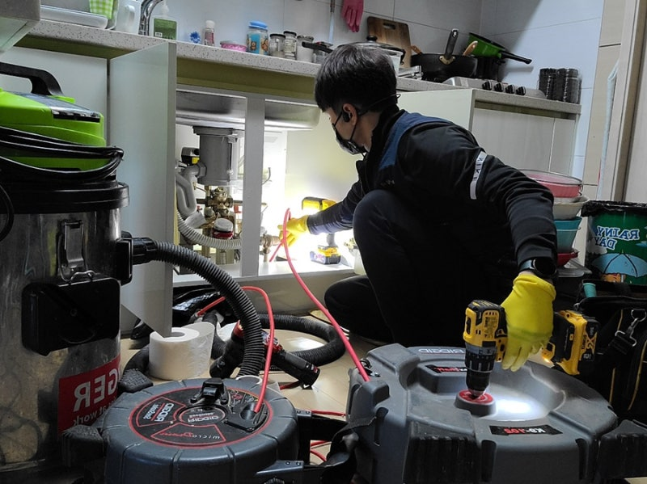
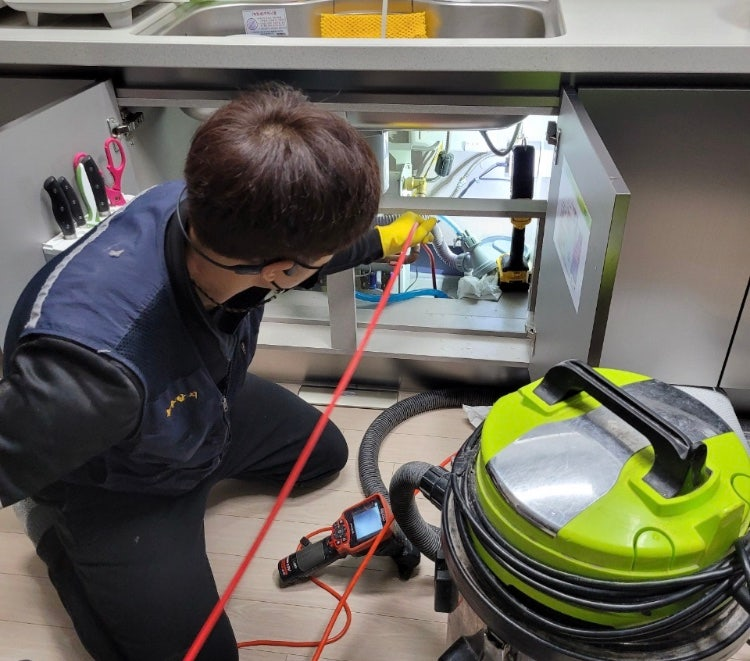
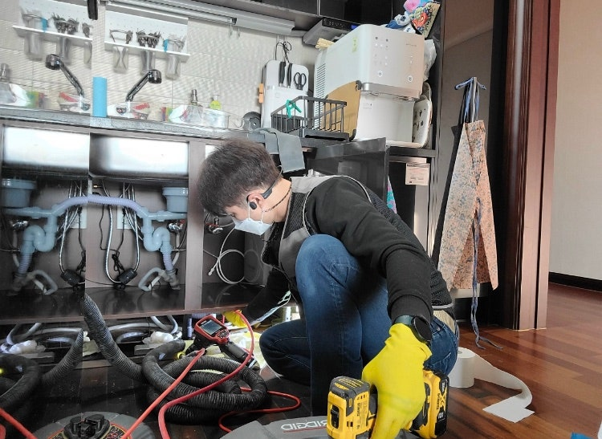
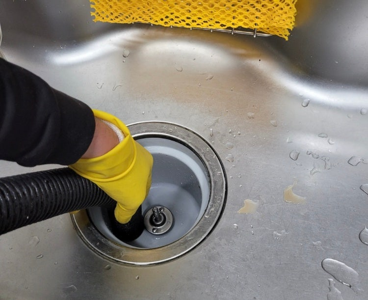
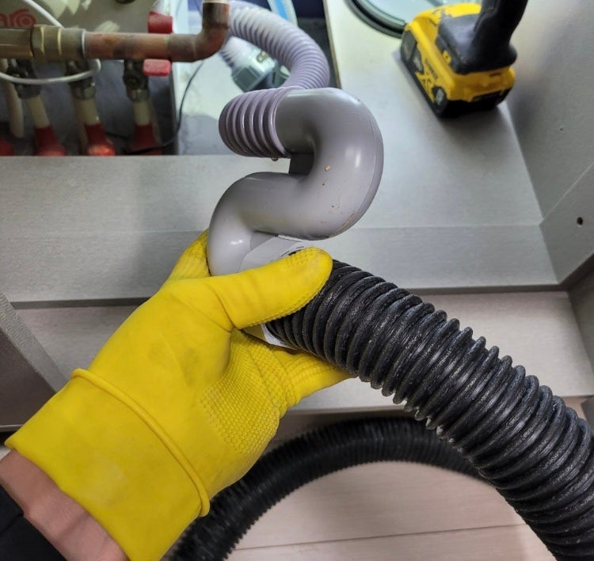
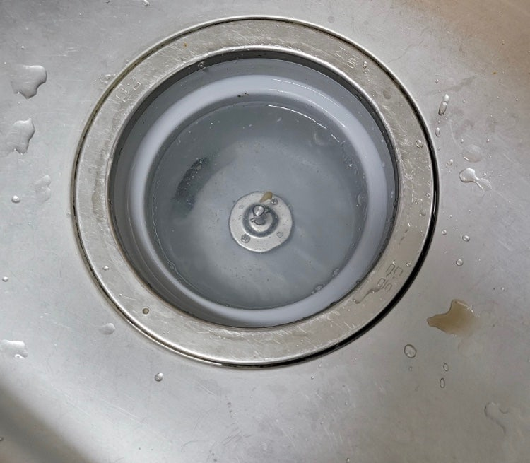
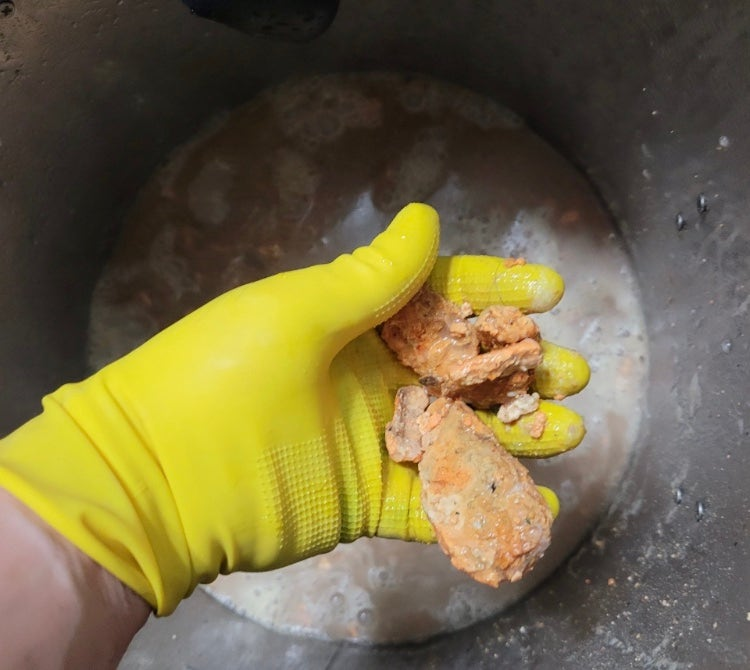

🏠 처인구하수구막힘은 하수구막힘에서
용인 처인구 하수구막힘 배관청소 전문 시공 후기

📋 작업 개요
- 위치: 용인시 처인구 역북동, 용인시 처인구 김량장동, 용인 처인구
- 서비스 유형: 하수구막힘, 싱크대하수구배관, 변기막힘, 배관 뚫음, 고압세척
- 작업 일시: 2022. 1. 30. 3:51
- 업체명: 하수구수사대 (010-5615-2118)
🔍 문제 상황
처인구하수구막힘은 처인구하수구막힘에서
안녕하세요
"하수구 수사대" 입니다
싱크대하수구배관은 음식물이 주로 내려가다
보니 기름성분이 지나갈수밖에 없는데요
배관이 길거나 구배가 좋지 않다면 기름이
미쳐나가지 못하고 배관에 쌓이게 될 수 있습니다
여기서 알아두셔야 할 점이 하나 있습니다
요즘 음식물처리기를 사용하는 세대가 많아졌죠?
아무래도 음식물 처리기는 음식을 갈아서 하수구로
배출을 하는 경우가 많은데요 이렇게 된다면
배관에 음식물이 죽처럼 나가게 되어서 메인 배관에
들어가 머무르고 쌓이게 된다면 막힘 현상이 빠르게
나타날수 있습니다 이런 경우는 전문가에게 의뢰를
부탁드리는 것을 추천드려 봅니다 ㅎㅎ
단순히 막혀있는거라 생각하시고 셀프 해결을
한다면 다시 막힐 가능성이 매우 큽니다
만일 몇시간을 뚫었는데도 뚫리지 않는 경우는

🔎 원인 분석
💡 전문가 진단: 슬러지와 이물질이 통로를 꽉 막고 있어 배수가 불가능하며, 고압 세척과 샤프트 타격이 동반되어야 완벽한 해결이 가능합니다.
아랫집에 큰 피해까지 줄 수 있기 때문에
항상 전문가에게 의뢰를 하시는 걸 추천드립니다
그래도 하수구가 갑자기 막혀버린다면 정말
당황스러울 것이 분명한데요 그렇기 때문에 빠르게
전문 업체를 알아보아야 합니다
서울/경기/인천 (수도권전지역)전지역
출장이 가능하고 주말,공휴일도 출장이 가능한 곳이
언제 어느때나 연락하기 좋기때문에
이런 모든 점이 가능한
처인구하수구막힘 전문 업체인 '하수구막힘'으로
연락 한통만 주신다면 언제 어디서나 방문하겠습니다
하수구막힘을 해결하기 전 정확히 알아야
할 점은 바로 왜 하수구가 막혔는지 , 원인인데요
이 원인을 알기 위해서라면 내시경 카메라가
필요합니다 내시경 카메라는 하수구 수사대 포스팅
에서도 자주 나온 유용한 작업 장비 이죠? ㅎㅎ
저희 처인구하수구막힘 업체인 '하수구막힘'은
내시경 카메라 외에도 많은 최첨단 장비들과

🔧 작업 과정
검증된 기술력을 지니고 작업에 몰두하고 있습니다
요즘은 2~3년된 아파트에서 종종 막히는
증상이 꽤 나타나고 있는데요 구조적으로 그럴수
밖에 없는 것이 , 배관이 길고 여러번 꺽이는
구간이 많으면 2~3년만에 막히는 경우가 종종
나타나고 있다 할 수 있습니다
그래서 많은 분들께서 하수구가 막혔을때
펑크린같은 세정액을 넣어주시는 것 처럼
소소한 관리들을 해주시는데요
혹시라도 계속 막히는 증상이 일어난다면 주저없이
처인구하수구막힘 업체인 '하수구막힘'으로
연락주시면 당일 방문까지 가능합니다!
간혹 하수구가 막히면서 배관에서 역류현상이
일어나는 경우가 종종 있는데요 이럴 경우에는
아파트에선 싱크대하수구와 보일러 분배기가
같이 위치해 있기 때문에 밑에집에 누수가 일어날수도
있기에 한번쯤은 점검을 받아보셔야 합니다
만일 하수구가 완전 막혔을땐 뚫는 장비가 여럿
있지만 흔히 생각하시는 장비는 스프링일거에요
하지만 스프링은 뚫어주는 용도로만 쓰일뿐 배관이
깨끗해지지는 않는데요 그럴땐 기름을 제거하기에
최적화 되어 있는 장비인 처인구하수구막힘 업체인
'하수구막힘'의 플렉스샤프트가 있는데요
내시경 카메라와 함께 사용이 되니 참고해두세요!
오늘은 처인구하수구막힘 업체인 '하수구막힘'의
하수구가 막혔을때 깨끗히 해결하는 방법을
알아보았는데요 보다시피 저희 업체에서는
오래된 노하우로 깔끔하게 작업을 도와드립니다
또한 , 당일방문까지 보장되어 있기 때문에


✅ 작업 완료
바로 해결을 원하신다면 바로 연락 부탁드립니다
혹시라도 작업 후에 문제가 생겼을 경우에는
1년동안 AS가 가능하니 걱정하지 마시고
빠르게 연락 주시면 감사하겠습니다
전화번호:010-2340-2118
경기도 화성시 효행로 1060 10층 1004-A246호
#처인구 #하수구 #하수구막힘 #싱크대 #싱크대막힘
#처인구하수구막힘 #업체 #전문업체




⚠️ 주방 싱크대 배관 막힘 예방 수칙
- ✅ 기름기가 묻은 식기나 프라이팬은 설거지 전 키친타올로 반드시 기름때를 닦아내세요.
- ✅ 주기적으로 싱크대 개수대에 뜨거운 물을 가득 받아 한 번에 내려 배관 내부 기름을 씻어내세요.
- ✅ 배수구 거름망을 미세한 필터로 사용하시고 음식물 찌꺼기가 틈으로 새어 들지 않게 관리하세요.
- ✅ 베이킹소다와 식초를 뜨거운 물과 함께 일주일에 한 번씩 부어주면 배관 살균과 막힘 예방에 좋습니다.
💡 핵심 정리
- 확실한 장비 작업(내시경 점검 및 샤프트 스케일링)으로 원인을 뿌리 뽑습니다.
- 작업 후 1년 이내에 동일한 부위 재발 시 100% 무상 A/S 서비스를 보장합니다.
- 서울 · 경기 · 인천 전 지역에 24시간 언제든 긴급 출동할 수 있도록 항시 대기 중입니다.
❓ 자주 묻는 질문 (FAQ)
🚨 용인 처인구 하수구막힘 배관청소 문제로 고민이신가요?
정확한 원인 진단과 확실한 시공으로 재발 없는 해결을 약속드립니다.
24시간 긴급 출동 | 서울 · 경기 · 인천 전지역 | 1년 내 재발 시 무상 A/S